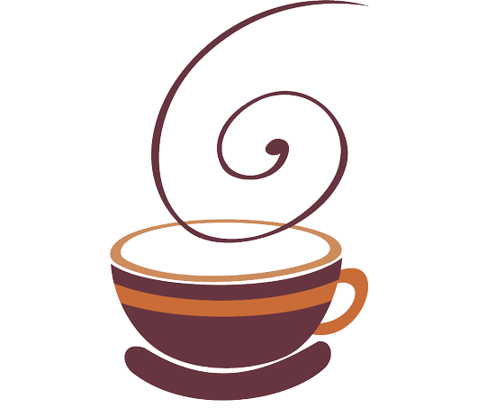
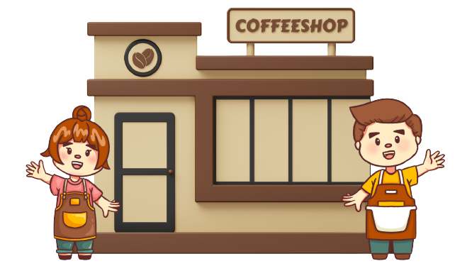

Kopi Kuy 
Kopi Kuy merupakan sebuah startup kopi retail yang ingin menyajikan high quality Coffee untuk para pelanggannya.
Dapat di beli melalui :

Kopi Kuy merupakan sebuah startup kopi retail yang ingin menyajikan high quality Coffee untuk para pelanggannya.
Dapat di beli melalui :
nikmati menu andalan yang menjadi favorit customer Kami

Caphucino

Espresso

Kopi Susu

Cafe Latte
Didirikan pada 2017, Kopi Kuy merupakan sebuah startup kopi retail yang ingin menyajikan kopi dengan kualitas tinggi untuk para pelanggannya. Nama Kuy yang diambil dari "yuk" yang merupakan harapan kami untuk mengajak semua yang terlibat dalam bisnis kami untuk bersama-sama menikmati sajian kopi yang berkualitas.

Kopi yang kami jual, hanya dari petani terpilih, dan berkualitas tinggi diproses secara sempurna dan diteruskan oleh para barista handal, yang penuh semangat dalam menyiapkan segelas kebahagiaan spesial untuk anda.
Kami berinvestasi dalam rasa - mulai dari pemilihan biji, metode pemanggangan, hingga barista dengan sertifikat internasional

Founder Kopi Kuy

Head of Marketing

Barista

Barista
Kami berikan fakta dan data karena kepuasan konsumen selalu menjadi nomor 1 untuk kami

Mahasiswa
"Perdana kesini langsung merasa cocok dari segi tempat dan rasa. Baristanya ramah dan pelayanannya maksimal, tidak sungkan bertanya keinginan pengunjung."

Karyawan Swasta
Asik buat santai sm tmn2, tempatnya nyaman dan yg bikin seru banyak game2nya yg bs dimainkan bareng tmn2 atau saudara, menunya enak2, pokoknya recomend banget deh tempatnya wajib coba guys!!! Pelayanannya ramah banget 🤗."

Dosen
"Tempat nya nyaman sekali pasti kalo kalian dateng betah ... selain tempat yang nyaman lalu pelayanan nya good banget... dan kalian yang datang ke kopi kuy jangan lewatkan permainan yang disediakan oleh kopi kuy , banyak banget game nya!"